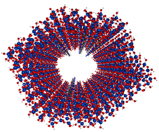
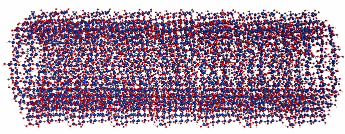

 We are developing accurate ab initio electronic structure methods that greatly reduce scaling with system size, to facilitate the application of these methods to heterogeneous catalysis. The catalysts of primary interest are mesoporous silica nanoparticles (MSN); however, the methods under development are generally applicable to heterogeneous catalysis and associated interfacial phenomena. Computational investigations of heterogeneous catalysis, with explicit incorporation of many thousands of atoms in the simulations, require algorithms that are able to take effective advantage of pre-exascale and upcoming exascale computers. A focus of the project research is on the effective fragment potential (EFP), fragment molecular orbital (FMO) and effective fragment molecular orbital (EFMO) fragmentation methods. These methods divide a large many-atom system into fragments, each of whose energy can be computed on a separate node and can take effective advantage of current petascale computers. The multi-level parallelism of these methods is being enhanced for heterogeneous catalysts, so that they can take advantage of exascale computers, by the use of advanced software techniques and by exploring the efficacy of novel architectures, such as GPUs, Phi, ARM, and FPGAs. To increase the utility of the three fragmentation methods in the community, key features of the three no-cost codes (GAMESS, NWChem, Psi4, with a combined estimated user base of ~150,000) are being made interoperable so that users of one can access the key features of the others. The interoperability approach makes use of the quantum chemistry common driver and data bases (QCDB) platform and can readily be extended to other codes. All advances in all three codes including source codes, are made freely available via web download. To enhance the connection with experiments, the developments in electronic structure theory are being complemented by and integrated with the development of non-equilibrium statistical mechanics methods to model the structure of complex catalytic materials as well as solution-phase transport and reaction processes in confined environments.
